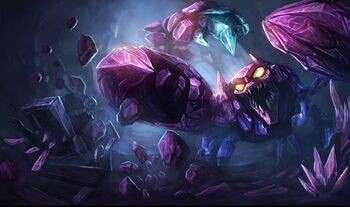

tu devrais essayer Skarner

skarner est très spécial en son genre, il possède un gameplay assez lent et peu intéressant, sa seule force réside dans son ultime qui lui par contre est particulièrement puissant, il vous permet d'immobiliser puis de trainer un adversaire devant vous pendant un certain momment, vous permettant d'anhihiler un ennemie trop dangereux pour votre équipe